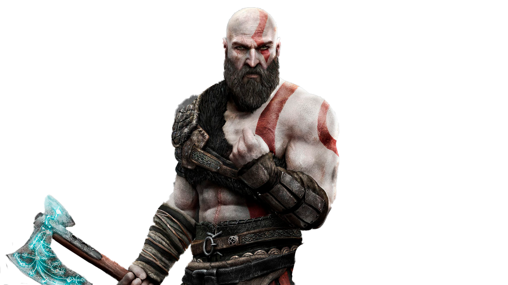

Garoto

Kratos é o protagonista da série God of War.[1] Tendo sua primeira aparição em God of War (2005), o personagem é um espartano com sede de poder que, para salvar sua vida, é forçado a servir o deus Olímpico Ares. Durante um massacre, Kratos mata acidentalmente sua esposa e filha. Renunciando a Ares e ficando com sua alma atormentada, Kratos serve os deuses por dez anos(finalmente se tornando o Deus da Guerra), até ser traído por Zeus. Uma turbulenta série de tentativas de se livrar da autoridade moral dos deuses(e até mesmo dos Titãs e de conseguir sua vingança, culminando em um confronto final com Zeus).
Filho de Kratos sua aparição ocorre no God of War (2018) ele é muito importante para trama. Sua personalidade costuma ser de ingenuidade no começo da trama por não saber o passado do seu pai. No decorrer do jogo ajuda o seu pai em combate em diferentes situações. No final do jogo é revelado que Atreus foi batizado pelo nome Loki pela sua mãe.
Ele um sábio de Midgard no God of War (2018). Ele pede a Kratos cortar a sua cabeça para guiar ele e Atreus nas terras Nórdicas.